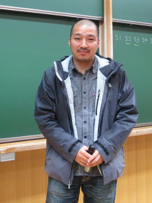
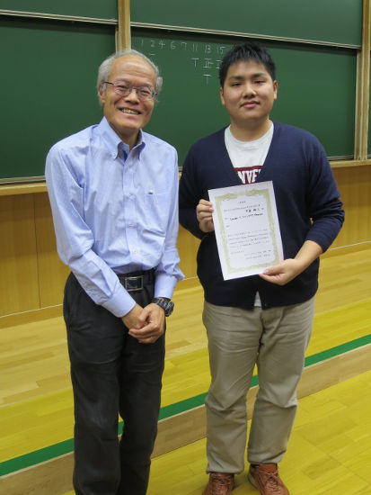

冬のLA開催概要
京都大学数理解析研究所RIMS研究集会「理論計算機科学の最先端」（研究代表者: 岩間 一雄）
- 日程: 2017年 2月 1日 (水) 〜 3日 (金)
- 場所: 京都大学 数理解析研究所 420号室（〒606-8502 京都市左京区北白川追分町）
LA/EATCS発表論文賞の結果
投票の結果、2016年度 LA/EATCS 発表論文賞は、
- 一般：[15] A faster parameterized algorithm for Pseudoforest Deletion
Hans L. Bodlaender (Utrecht University), 小野 廣隆 (九州大学), ○ 大舘 陽太
(北陸先端科学技術大学院大学) - 学生：[8] Lyndon < 2×LZ77 Theorem
◎ 中島 祐人 (九州大学), Juha Kärkkäinen, Dominik Kempa, Simon J. Puglisi
(University of Helsinki), Arseny M. Shur (Ural Federal University)
が選ばれました（〇と◎が発表者です）。
発表論文賞決定の様子（発表論文賞授賞式は夏のLAシンポジウム2017で行われる予定です。）

学生発表論文賞授賞式の様子

プログラム
講演申込
オンラインの講演申込ページよりご登録ください（受け付けは終了しました）。ご講演の申し込みは2016年12月2日（金）までにお願いいたします。
講演者の方へ
発表時間
一般セッション 25分(発表20分＋質疑応答5分) 、学生セッション 15分(発表12分＋質疑応答3分)
予稿
各講演の予稿を会場で配布する形にしたいと思います。つきましては、 講演者の方は、予稿を90部印刷してご持参ください。 ご協力のほど、よろしくお願いいたします。
なお、例年どおり、同意いただける著者にはシンポジウム後に再度原稿を提出いただき、 京都大学 RIMS 講究録として論文集にして出版する予定です。ただし、講演申し込み時に講究録掲載を希望されない方が多い場合、講究録の出版を取りやめることがあります。
予稿は以下の書式でお願いいたします。
- 用紙サイズは A4 をお使いください。
- 1ページ目の左肩に 「2016年度冬のLAシンポジウム [発表番号]」 のように記入してください。 （発表番号が[14]の例： 2016年度冬のLAシンポジウム [14]） 発表番号はプログラムに記載されております。
- ページ番号は「発表番号-ページ」の組でページ下中央に表記してください。 （発表番号が[14]の例： 14-1, 14-2, 14-3, …）
LaTeX 用の予稿のテンプレート （LAtemplate.tex）がございますので、 どうぞご利用ください。 5行目の「14」という数字をご自分の講演番号に書き換えていただくことで、 指定の書式の予稿を作成することができます （出力例：LAtemplate.pdf）。
旅費補助
今年度も例年通り、京都大学数理解析研究所共同研究集会として開催されます。 そのため、旅費の補助および講究録の作成を行います。 旅費の補助を希望される方は、 2016年12月9日（金） までにオンラインの受付ページよりお申し込みください（受け付けは終了しました）。 なお、旅費補助の希望者多数の場合には、事務局にて調整させていただきますので、 あらかじめご了承願います。 なお、学部学生は補助の対象外です。
LA/EATCS発表論文賞（LA/EATCS Best Presentation Award）
2001年度より開始されましたLA発表論文賞ですが、2002年度からEATCS Japan Chapterと共同で、LA/EATCS発表論文賞と衣替えし、今回が第15回となります。 EATCS Japan Chapter事務局各位には、暖かいご支援に厚く御礼申し上げます。
選考要領は、シンポジウム参加者全員の投票により、若手講演者／学生の中から 優れた発表を行った方を選出し表彰を行います。 EATCSについては http://www.eatcs.org/ を, EATCS日本支部については http://www.ecei.tohoku.ac.jp/alg/EATCS-J/index-j.html をご覧ください。 これまでの受賞者については http://www.ecei.tohoku.ac.jp/alg/EATCS-J/award-j.html にございます。
選出方針
発表論文賞はすべての発表者のうちで最優秀の発表者を表彰し、学生発表論文賞は学生発表者のうちで最優秀の発表者を表彰します。 なるべく多くの人が受賞の栄誉に輝いていただけるよう、発表論文賞と学生発表論文賞は異なる人に授与します。つまり、発表論文賞を学生に授与した場合、その受賞者を除く学生発表者のうちで最優秀の発表者に学生発表論文賞を授与します。
選出方法
LAシンポジウム参加者は、発表論文賞、学生発表論文賞に１名ずつ、「異なる人へ」投票していただきます。この投票の扱いは、以下の通りとします（投票用紙に記入された発表論文賞の被投票者をＡ、学生発表論文賞の被投票者をＢとします）。
- Ａが発表論文賞を受賞する、あるいは、Aが学生でない場合
発表論文賞についてはＡへの投票、学生発表論文賞についてはＢへの投票とみなします。 - Ａが発表論文賞を受賞せず、しかも、学生である場合
発表論文賞についてはＡへの投票、学生発表論文賞についてもＡへの投票とみなします（学生発表論文賞のＢへの投票は無視されます）。 - また、学生発表論文賞での得票数一位が複数人いる場合には発表論文賞として得た票が最も多い人を学生発表論文賞の受賞者とします。
懇親会
以下の日程で懇親会を開催いたします。 懇親会申し込みページより、 2017年1月25日（水） までに参加登録をお願いいたします（申し込みは終了しました）。申し込みのページから鍋の種類をお選びください。
- 日時：2017年2月2日（木）
午後6時30分午後6時より（開始時刻が変更になりました。） - 会場：聖護院御殿荘 http://www.gotenso.com/
- 住所：〒606-8324 京都市左京区聖護院中町 15
- 電話：075-771-4151
- 参加費：5,000円程度